This tutorial covers creating a ToDo application using Ruby on Rails. The ToDo application will have a few parts.
The completed code can be found on my ToDo App Repository.
Open a new terminal window. Lets create a directory called Development in your home directory. This will be where we keep development work. Create a sub directory under Development called rails. The following commands will create the directory structure.
cd
mkdir Development
cd Development
mkdir rails
cd rails
Now that the Development directory and rails directory are created we can create the new rails app.
You might need to install an different version of the bundler gem. Rails 4.2.11.3 requires less than version 2. To check which version you have run:
gem list bundler
And you will see something like
$ gem list bundler
*** LOCAL GEMS ***
bundler (2.0.1)
If you don't have a version less than 2 then you can run this command to install it.
gem install bundler -v '1.17.3'
You will then need to uninstall the 2.0.1 version.
gem uninstall bundler -v '2.0.1'
Run the following command from the Development/rails directory in the terminal.
rails new todo-app -d mysql -T
The -d flag allows you to specify which database should be used by the new application, we're specifying mySQL here.
The -T flag will tell Rails not to generate a test suite. We will do this separately later.
You can find an in depth overview of Rails 4.2 on the official Rails website. https://guides.rubyonrails.org/v4.2/getting_started.html
| File/Folder | Purpose |
|---|---|
| app/ | Contains the controllers, models, views, helpers, mailers and assets for your application. You'll focus on this folder for the remainder of this guide. |
| bin/ | Contains the rails script that starts your app and can contain other scripts you use to setup, deploy or run your application. |
| config/ | Configure your application's routes, database, and more. This is covered in more detail in Configuring Rails Applications. |
| config.ru | Rack configuration for Rack based servers used to start the application. |
| db/ | Contains your current database schema, as well as the database migrations. |
| Gemfile Gemfile.lock |
These files allow you to specify what gem dependencies are needed for your Rails application. These files are used by the Bundler gem. For more information about Bundler, see the Bundler website. |
| lib/ | Extended modules for your application. |
| log/ | Application log files. |
| public/ | The only folder seen by the world as-is. Contains static files and compiled assets. |
| Rakefile | This file locates and loads tasks that can be run from the command line. The task definitions are defined throughout the components of Rails. Rather than changing Rakefile, you should add your own tasks by adding files to the lib/tasks directory of your application. |
| README.rdoc | This is a brief instruction manual for your application. You should edit this file to tell others what your application does, how to set it up, and so on. |
| tmp/ | Temporary files (like cache, pid, and session files). |
cd into the todo-app application directory and open it in VS Code. We need to update some configuration. The file config/database.yml contains the credentials required for connecting to the database so those will need to be updated to let the app connect. Give the username and password that you set when installing mySQL. This is what my default config looks like from config/database.yml.
default: &default
adapter: mysql2
encoding: utf8
pool: 5
username: root
password: root
socket: /tmp/mysql.sock
Now tha the credentials are specified the application should be able to access mySQL. We'll use Rake to run a command to create the databases. Rake is a task runner and is used for running some automated tasks in Rails. One of these tasks is to create the databases the app is going to use. To do that you can run.
bundle exec rake db:create
This will create the todo-app_development and todo-app_test databases. The _development database is where the app data will live and the _test database is used during automated tests.
Now that the database is setup lets test that the server will start. Run the following command to start the server:
bundle exec rails s
This will start the server and you can access it from the browser if you visit http://localhost:3000/. If all has gone well then you will see this page.
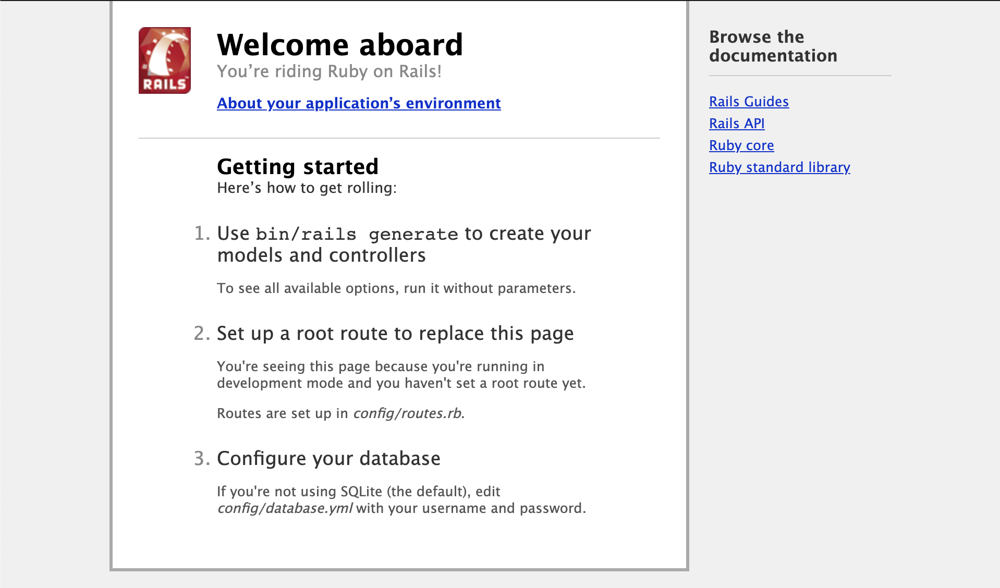
If you see this then everything has been successful so far! You can stop the server by pressing ctrl+c so do that now, we are going to make some changes the server should be stopped for.
We use RSpec for testing. https://rspec.info/ and documentation https://relishapp.com/rspec
We need to add the gems required for RSpec to the Gemfile. Add gem 'rspec-rails', '~> 3.9' to the Gemfile inside the :development, :test group. This is how it should look after adding the gem.
group :development, :test do
# Call 'byebug' anywhere in the code to stop execution and get a debugger console
gem 'byebug'
gem 'rspec-rails', '~> 3.9'
end
After adding the gem then from the terminal in the todo-app root directory run:
bundle install
This will install the gems. You should see something like this in the output.
Installing rspec-support 3.9.4
Fetching rspec-core 3.9.3
Installing rspec-core 3.9.3
Fetching rspec-expectations 3.9.3
Installing rspec-expectations 3.9.3
Using rspec-mocks 3.9.1
Fetching rspec-rails 3.9.1
Installing rspec-rails 3.9.1
After installing the RSpec gems we need to generate the boilerplate configuration for them to use. We will use the Rails generate command to do this. From the terminal in the todo-app root directory run:
bundle exec rails generate rspec:install
You should see this output:
create .rspec
create spec
create spec/spec_helper.rb
create spec/rails_helper.rb
The generator has created a new directory in our application called spec along with some helper classes. This directory is where all our tests will live. RSpec should now be configured for use with our application.
Now the basic app skeleton is created lets create a repo on Github for the application and push up what we have so far.
Login to Github and go to https://github.com/new to create a new repository. Give the repository the name todo-app and a description if you life. The form will look like this.
And when you click on Create repository you should see the empty repository like so:

At the moment the repository is empty so lets fix that.
### 4.2 Initialize the ToDo App for Github
From the todo-app root directory run the following command to initialize the directory for use with Github.
git init
If you now run:
git status
It will print out some info about the local repository such as what branch you're on and what files have been changes since the last push to Github. It will look like this at the moment.
On branch master
No commits yet
Untracked files:
(use "git add <file>..." to include in what will be committed)
.gitignore
Gemfile
Gemfile.lock
README.rdoc
Rakefile
app/
bin/
config.ru
config/
db/
lib/
log/
public/
vendor/
### 4.3 Adding files
Currently none of the files in the todo-app root directory are added to the repository. To add them all run:
git add .
After that running git status again will show that all the files have been added and will look like so:
On branch master
No commits yet
Changes to be committed:
(use "git rm --cached <file>..." to unstage)
new file: .gitignore
new file: Gemfile
new file: Gemfile.lock
new file: README.rdoc
new file: Rakefile
new file: app/assets/images/.keep
new file: app/assets/javascripts/application.js
new file: app/assets/stylesheets/application.css
new file: app/controllers/application_controller.rb
new file: app/controllers/concerns/.keep
new file: app/helpers/application_helper.rb
new file: app/mailers/.keep
new file: app/models/.keep
new file: app/models/concerns/.keep
new file: app/views/layouts/application.html.erb
new file: bin/bundle
new file: bin/rails
new file: bin/rake
new file: bin/setup
new file: config.ru
new file: config/application.rb
new file: config/boot.rb
new file: config/database.yml
new file: config/environment.rb
new file: config/environments/development.rb
new file: config/environments/production.rb
new file: config/environments/test.rb
new file: config/initializers/assets.rb
new file: config/initializers/backtrace_silencers.rb
new file: config/initializers/cookies_serializer.rb
new file: config/initializers/filter_parameter_logging.rb
new file: config/initializers/inflections.rb
new file: config/initializers/mime_types.rb
new file: config/initializers/session_store.rb
new file: config/initializers/to_time_preserves_timezone.rb
new file: config/initializers/wrap_parameters.rb
new file: config/locales/en.yml
new file: config/routes.rb
new file: config/secrets.yml
new file: db/seeds.rb
new file: lib/assets/.keep
new file: lib/tasks/.keep
new file: log/.keep
new file: public/404.html
new file: public/422.html
new file: public/500.html
new file: public/favicon.ico
new file: public/robots.txt
new file: vendor/assets/javascripts/.keep
new file: vendor/assets/stylesheets/.keep
### 4.2 Creating first commit Now that all the files have been added we are ready to create out first commit. This commit will consist of all the files (or changes) that have been added. To create the commit run:
git commit -m 'first commit'
The -m flag is the message to accompany the commit, the first one is very simple but generally the messages should be more descriptive like Adding feature X and feature Y and fixing bug A
### 4.3 Adding remote repository We have a commit created and ready to push to Github but we need to tell git where to send the commit. We need to add the remote repository we created previously on Github. If you look at the empty repo you will see the command we need to run in order to add the remote repository. Its highlighted here.

Replace USERNAME with your own and run the following command from the todo-app root directory:
git remote add origin git@github.com:USERNAME/todo-app.git
Now that everything is ready lets push the app to Github. Run the following command:
git push -u origin master
You will see output like this:
Enumerating objects: 62, done.
Counting objects: 100% (62/62), done.
Delta compression using up to 8 threads
Compressing objects: 100% (51/51), done.
Writing objects: 100% (62/62), 16.77 KiB | 858.00 KiB/s, done.
Total 62 (delta 2), reused 0 (delta 0)
remote: Resolving deltas: 100% (2/2), done.
To github.com:jonathanmeaney/todo-app.git
* [new branch] master -> master
Branch 'master' set up to track remote branch 'master' from 'origin'.
The -u origin is the remote repository called origin. This was created when we ran the command above to add the remote. And master is the name of the branch to push.
If you go to Github and to your repository you will see that all the files have been pushed up.

Now that Github is setup lets move onto creating our first resource in the app.
Rails comes with a number of scripts called generators that are designed to make your development life easier by creating everything that's necessary to start working on a particular task.
| Generator | Description |
|---|---|
| controller | Generate a new controller along with any corresponding views and tests. The syntax of the command is the controller generator followed by the name for the controller, singular names usually and following that a list of views can be specified to generate along with the controller: E.G. bundle exec rails generate controller Post index show view |
| job | Generate a new Job class. Jobs are tasks that can be done in a background asynchronous process. |
| mailer | Generate a new mailer for sending emails. |
| migration | Generate a migration. A migration is some task that will be carried out on the database. For example, adding a new column to a table, creating a new table, adding an index etc. the syntax for the command is the migration generator followed by a name for the migration and afterwards a set of options or list of fields: E.G. bundle exec rails generate migration AddFieldToModel name:string age:integer |
| model | Generate a new model. This will create the model class file along with a migration to create the corresponding table in the database. The syntax is the model generator followed by a name for the model, singular names usually. A list of fields and types can also be specified following the pattern field:type. E.G. bundle exec rails generate model Person name:string email:string age:integer dob:date admin:boolean |
| scaffold | Generate a scaffold for a resource. This will generate a controller with typical CRUD actions, views, a model and a migration all in one go. Similar to the model generator you can specify a list of fields and types with this generator to populate the model with. E.G. bundle exec rails generate scaffold Person name:string email:string age:integer dob:date admin:boolean |
First open the Gemfile there is something we need to remove. We don't use CoffeeScript (CoffeeScript is a language that compiles into JavaScript) but the gem gets included by default. To prevent Rails from generating CoffeeScript files we need to remove it from the Gemfile. Delete the lines:
# Use CoffeeScript for .coffee assets and views
gem 'coffee-rails', '~> 4.1.0'
Now with CoffeeScript removed, we're going to use one of the generators from the table above.
The controller generator creates controllers and optionally views to accompany. We will create a controller for generate application pages that will be available to anyone without an account. We will call the controller Site and give it two views index and about. The generator command looks like so:
bundle exec rails generate controller Site index about
You will see the following file creation output from running the command:
create app/controllers/site_controller.rb
route get 'site/about'
route get 'site/index'
invoke erb
create app/views/site
create app/views/site/index.html.erb
create app/views/site/about.html.erb
invoke rspec
create spec/controllers/site_controller_spec.rb
create spec/views/site
create spec/views/site/index.html.erb_spec.rb
create spec/views/site/about.html.erb_spec.rb
invoke helper
create app/helpers/site_helper.rb
invoke rspec
create spec/helpers/site_helper_spec.rb
invoke assets
invoke js
create app/assets/javascripts/site.js
invoke scss
create app/assets/stylesheets/site.scss
The router is located in config/routes.rb and:
The Rails router recognizes URLs and dispatches them to a controller's action, or to a Rack application. It can also generate paths and URLs, avoiding the need to hardcode strings in your views.
You can read more about it in the documentation
We need to make a few updates so that our new controller can be navigated to in the browser. The router lets you set a root path and this will be our homepage. The homepage will be the index view of the Site controller we just created.
The root method specifies which page should be matched to /. Update the config/routes.rb file like to add Site index as the root. Also removing the routes get 'site/index' and get 'site/about' that the generator automatically added. The updated routes will look like so.
Rails.application.routes.draw do
root to: "site#index"
get 'about', to: 'site#about'
...
...
...
Now start the server with:
bundle exec rails server
And navigate to http://localhost:3000 in the browser and you will see this beautiful page.

We're going to import Bootstrap to make things look a lot better.
Bootstrap is the most popular HTML, CSS, and JS framework for developing responsive, mobile first projects on the web.
The getting started documentation for Bootstrap is here and all the different components that Bootstrap provides are here.
The app/views/layouts/application.html.erb file contains the general structure and layout of our application. It is here where the general navigation will go. When navigating to a new page Rails will inject the content of that page into <%= yield %> meaning we don't need to keep repeating elements such as the navigation bar on each page. We just add it in the layouts once.
Replace the contents of app/views/layouts/application.html.erb with the following. This will include the styling for Bootstrap and also give up a navbar at the top to navigate between pages.
<!DOCTYPE html>
<html>
<head>
<title>TodoApp</title>
<!-- Required meta tags -->
<meta charset="utf-8">
<meta name="viewport" content="width=device-width, initial-scale=1, shrink-to-fit=no">
<!-- Latest compiled and minified CSS -->
<link rel="stylesheet" href="https://cdn.jsdelivr.net/npm/bootstrap@4.5.3/dist/css/bootstrap.min.css" integrity="sha384-TX8t27EcRE3e/ihU7zmQxVncDAy5uIKz4rEkgIXeMed4M0jlfIDPvg6uqKI2xXr2" crossorigin="anonymous">
<!-- Latest compiled and minified JavaScript -->
<script src="https://code.jquery.com/jquery-3.5.1.slim.min.js" integrity="sha384-DfXdz2htPH0lsSSs5nCTpuj/zy4C+OGpamoFVy38MVBnE+IbbVYUew+OrCXaRkfj" crossorigin="anonymous"></script>
<script src="https://cdn.jsdelivr.net/npm/popper.js@1.16.1/dist/umd/popper.min.js" integrity="sha384-9/reFTGAW83EW2RDu2S0VKaIzap3H66lZH81PoYlFhbGU+6BZp6G7niu735Sk7lN" crossorigin="anonymous"></script>
<script src="https://cdn.jsdelivr.net/npm/bootstrap@4.5.3/dist/js/bootstrap.min.js" integrity="sha384-w1Q4orYjBQndcko6MimVbzY0tgp4pWB4lZ7lr30WKz0vr/aWKhXdBNmNb5D92v7s" crossorigin="anonymous"></script>
<%= stylesheet_link_tag 'application', media: 'all', 'data-turbolinks-track' => true %>
<%= javascript_include_tag 'application', 'data-turbolinks-track' => true %>
<%= csrf_meta_tags %>
</head>
<body>
<nav class="navbar navbar-expand-md navbar-light bg-light">
<a class="navbar-brand" href="#">ToDo App</a>
<button class="navbar-toggler" type="button" data-toggle="collapse" data-target="#navbarsExampleDefault" aria-controls="navbarsExampleDefault" aria-expanded="false" aria-label="Toggle navigation">
<span class="navbar-toggler-icon"></span>
</button>
<div class="collapse navbar-collapse" id="navbarsExampleDefault">
<ul class="navbar-nav mr-auto">
<li class="nav-item">
<a class="nav-link" href="/">Home</a>
</li>
<li class="nav-item">
<a class="nav-link" href="/about">About</a>
</li>
</ul>
</div>
</nav>
<div class="container">
<br/>
<%= yield %>
</div><!-- /.container -->
</body>
</html>
Refresh the browser and you should see the following.

We're going to use the jumbotron component from Bootstrap to make the homepage look a bit nicer.
Replace the contents of app/views/site/index.html.erb with:
<div class="jumbotron">
<h1 class="display-4">Welcome!</h1>
<p class="lead">Welcome to the ToDo App!</p>
<hr class="my-4">
<p>Its built using Ruby on Rails 4.2 and Bootstrap 4.</p>
<a class="btn btn-primary btn-lg" href="/about" role="button">Learn more</a>
</div>
And if you refresh the page in the browser you will see this!
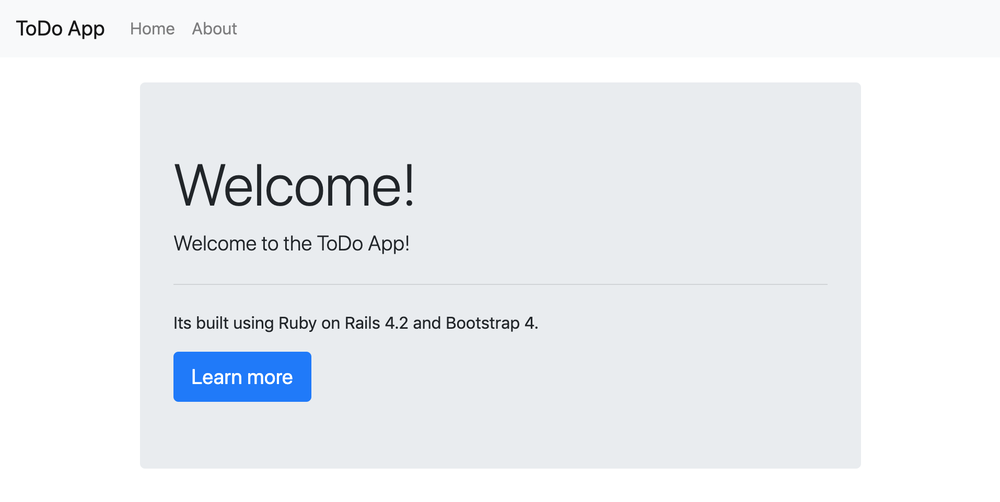
Its looking more like an app now!
git status and see all the new files and updates that have been added.git add . and then run git status again to see all the changes have been added.git commit -m 'Adding Site controller and improving style'git push -u origin masterLets start using branches for new features and work. We are already up to date with master so we can create a new branch on which to add User. Its always a good idea to check if there are any uncommitted changes before changing branches or creating a new one. Run:
git status
and you will see something like this:
On branch master
Your branch is up to date with 'origin/master'.
nothing to commit, working tree clean
This means there are no changes made so we can change branches or create a new one without any issue. The easiest way to create a new branch and to check it out is with the following command git checkout -b <branch-name>. Lets use it to create a branch for users:
git checkout -b adding-users
The adding-users branch has been created, you can also run git status to verify the branch you are one. Running it now will show:
On branch adding-users
nothing to commit, working tree clean
We are going to use the model generator to create the User model. A user will have 2 attributes email and password. The password however will be saved as password_digest in the database. The password will be encrypted. Run the following command to generate the User model. email and password_digest are the table fields, usually you would specify what the field type is too e.g. age:integer dob:date but if you don't specify the type it will default to string.
bundle exec rails generate model User email password_digest
You should see the following output from the command. You can see the migration file being generated in the db/migrate directory. The migration file will contain code to generate the users table in the database with the email and password_digest fields along with some timestamp fields. Rails adds an auto incrementing id field too. The model class gets created and also since we have RSpec installed a test file for the model is also generated.
invoke active_record
create db/migrate/20201028134028_create_users.rb
create app/models/user.rb
invoke rspec
create spec/models/user_spec.rb
Now the model is created along with the migration to update the database we need to run a rake task to run the migration. Running:
bundle exec rake db:migrate
will run any outstanding migrations that have not been run yet (Rails keeps track of which migrations have been run using the schema_migrations table that it automatically creates for us). You should see some output like the following from the migration:
== 20201028134028 CreateUsers: migrating ======================================
-- create_table(:users)
-> 0.0547s
== 20201028134028 CreateUsers: migrated (0.0548s) ====================
This means that the table has been created in the database. If you view the database now you will see the tablas has been created along with the schema_migrations table discussed above.

bcrypt() is a sophisticated and secure hash algorithm designed by The OpenBSD project for hashing passwords. The bcrypt Ruby gem provides a simple wrapper for safely handling passwords.
We're going to use this gem for encrypting passwords. Open the Gemfile and add gem 'bcrypt', '3.1.16' to it, I put it under the sdoc gem. After adding this to the Gemfile we need to get bundler to install the gem for us. Running:
bundle install
will install the gem for us to use in the application.
When that is done open app/models/user.rb. Rails has an in build feature to handle encrypting passwords. We need to add has_secure_password to the User model.
has_secure_password Adds methods to set and authenticate against a BCrypt password
more info can be found in the documentation
After updating the user.rb it should look like this:
class User < ActiveRecord::Base
has_secure_password
end
Now our user model will have the ability to work with passwords and encrypting.
Now the User model is in place we need to create a controller to interact with the model and allow us to create new users. Using the controller generator generate a controller with new and create views and actions.
bundle exec rails generate controller Users new create
The output of the command looks like this, creating all the different files.
create app/controllers/users_controller.rb
route get 'users/create'
route get 'users/new'
invoke erb
create app/views/users
create app/views/users/new.html.erb
create app/views/users/create.html.erb
invoke rspec
create spec/controllers/users_controller_spec.rb
create spec/views/users
create spec/views/users/new.html.erb_spec.rb
create spec/views/users/create.html.erb_spec.rb
invoke helper
create app/helpers/users_helper.rb
invoke rspec
create spec/helpers/users_helper_spec.rb
invoke assets
invoke js
create app/assets/javascripts/users.js
invoke scss
create app/assets/stylesheets/users.scss
The router has a method resources which will auto generate routes for a controller. We're going to use it for users. The method can also take several options including the only array. This is an array of actions to generate routes for. We only have new and create actions defined in the UsersController so we should only generate routes for those. Update the config/routes.rb with the new resources line for users. The code is below.
Rails.application.routes.draw do
root to: "site#index"
get 'about', to: 'site#about'
resources :users, only: [:new, :create]
...
...
...
Another handy rake task is routes this will print out all the routes currently defined and where they route to. Its very useful. If you run:
bundle exec rake routes
You'll get output like the following which lists all the defined routes along with the http verb used to access it. It also details which controller and action the route will go to.
Prefix Verb URI Pattern Controller#Action
root GET / site#index
about GET /about(.:format) site#about
users POST /users(.:format) users#create
new_user GET /users/new(.:format) users#new
We need to make an update to the UI to provide a link to the new user page. We're going to use one of the Rails view helper methods called link_to to generate the link. Rails has many view methods but you can find out more about link_to here.
Open the app/views/layouts/application.html.erb and we will modify the ul inside the navbar. These links are the navigation for the application. We're going to replace these HTML links with the link_to rails helper method.
<a class="nav-link" href="/">Home</a>
becomes
<%= link_to 'Home', root_path, class: 'nav-link' %>
and
<a class="nav-link" href="/about">About</a>
becomes
<%= link_to 'About', about_path, class: 'nav-link' %>
we will also add a new link to get to the register page.
<li class="nav-item">
<%= link_to 'Register', new_user_path, class: 'nav-link' %>
</li>
Together the final changes will look like this:
<ul class="navbar-nav mr-auto">
<li class="nav-item">
<%= link_to 'Home', root_path, class: 'nav-link' %>
</li>
<li class="nav-item">
<%= link_to 'About', about_path, class: 'nav-link' %>
</li>
<li class="nav-item">
<%= link_to 'Register', new_user_path, class: 'nav-link' %>
</li>
</ul>
In the link_to method the first parameter is the text to display in the rendered link in the HTML.
The second parameter is the URL for the link. Notice that the URL matches the prefix of the routes printed above when running bundle exec rake routes. Rails auto generates methods for each of these route prefixes and appending _path just returns the path for that particular route. So home_path would return / and about_path would return /about and new_user_path would return /users/new.
The last parameter of the link_to are just an additional HTML options needed, classes, id anything like that. We're keeping the class needed for Bootstrap to apply styles.
Refresh the browser page and you should see the new link added to the navigation menu and clicking it will bring you to the app/views/users/new.html.erb page.
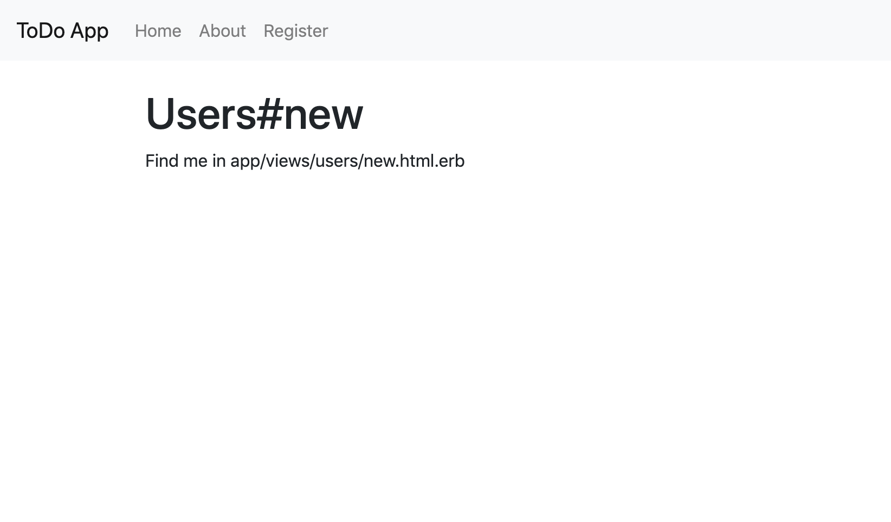
Open up app/views/users/new.html.erb, we're going to update it to include a form for registering as a new user using some of the Rails form helper methods and Bootstrap again. Replace the contents of the file with the following code:
<h1>Register</h1>
<p>Enter your details below to register!</p>
<%= form_for @user do |f|%>
<div class="form-group">
<%= f.label :email%>
<%= f.email_field :email, class: 'form-control'%>
</div>
<div class="form-group">
<%= f.label :password%>
<%= f.password_field :password, class: 'form-control'%>
</div>
<button type="submit" class="btn btn-primary btn-block">Register</button>
<% end %>
This form is using the form_for helper. You can learn more about form helpers here.
The form_for helper will generate a HTML form tag and populate its action appropriately. We've specified here the form is for a @user object. The helper method will use this to determine what the action of the form should be.
We are also using the email_field helper and the password_field helper to generate the input fields for email and password. Input helpers need the name of the attribute they are representing, the user :email and :password in this instance.
The above code will generate the following HTML if you inspect the browser page.
<form class="new_user" id="new_user" action="/users" accept-charset="UTF-8" method="post"><input name="utf8" type="hidden" value="✓">
<input type="hidden" name="authenticity_token" value="jCYJesIMUoRawylhzQiqaPRADGwbhyqQxq2LNPVfZQfNBF+6V8wIrLwXcKe166uUD1xprMZ3cgtspLaoffaF4g==">
<div class="form-group">
<label for="user_email">Email</label>
<input class="form-control" type="email" name="user[email]" id="user_email" autocomplete="off">
</div>
<div class="form-group">
<label for="user_password">Password</label>
<input class="form-control" type="password" name="user[password]" id="user_password" autocomplete="off">
</div>
<button type="submit" class="btn btn-primary btn-block">Register</button>
</form>
If you refresh the browser after making this change adding the form you will see this error:

We're created a form for a new user object but we haven't actually created that user object yet. To fix this open app/controllers/users_controller.rb. We're going to make a change to the new action. This action corresponds with the app/views/users/new.html.erb view, any instance variables (variables starting with @) declared in this method will be accessible from the corresponding view. So in the new action declare a @user object to be a new instance of the User model. The code will look like this:
class UsersController < ApplicationController
def new
@user = User.new
end
def create
end
end
Now if you refresh the browser the error will be resolved and you will see the form.
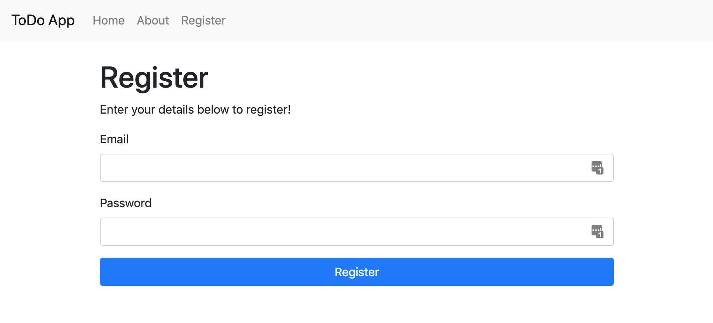
The form is in place when we submit it won't create a new user. That functionality needs to be added now. If we have another look at the routes by running bundle exec rake routes
Prefix Verb URI Pattern Controller#Action
root GET / site#index
about GET /about(.:format) site#about
users POST /users(.:format) users#create
new_user GET /users/new(.:format) users#new
we can see that using the POST verb to /users will route to the create action in the users controller. So we need to prepare that action to receive the data from the form and then use it to create a new User record in the database.
Open app/controllers/users_controller.rb. We will make a few changes. Data coming from the form will be in a params hash object that rails provides. So we can retrieve the values from the params. But retrieving them directly from the param isn't a good idea because anything can be in there. Theres a way to ensure that only the correct parameters are allowed.
We're going to add a private method called user_params. This will use Strong Parameters which is a way of encapsulating permissible parameters. It will prevent other data being injected into the payload and making its way into the app. You can read more about strong parameters in the documentation
Im the user_params method we specify that the params requires a user object and we also specify the fields that are permissable. The user_params method will look like this.
def user_params
params.require(:user).permit(:email, :password)
end
This is a pattern you should use for all data coming from forms in controllers.
Now that the user_params method is in place lets use it. Inside the create action we will use the ActiveRecord create method which is available to models. This will accept a hash of field params and create a new object with the params and save it to the database. After the user is created and saved we then store the id of the the user in the session this will be used to keep track of authentication status.
This is how the create method looks after these changes.
def create
@user = User.create(user_params)
session[:user_id] = @user.id
end
The whole controller should look like this when all these changes have been made to support creating a new user.
class UsersController < ApplicationController
def new
@user = User.new
end
def create
@user = User.create(user_params)
session[:user_id] = @user.id
end
private
def user_params
params.require(:user).permit(:email, :password)
end
end
Now return to the new user form in the browser, fill it in and submit. The screen wont show much at this point but if you inspect the database you will see the new user record with has been created.
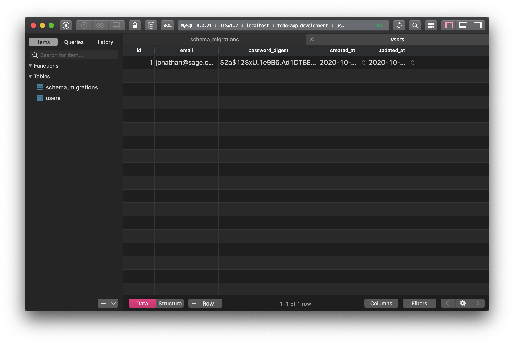
Its time to push up the users feature and create a pull request. Running git status will show all the changes so far. Files modified and added.
On branch adding-users
Changes not staged for commit:
(use "git add <file>..." to update what will be committed)
(use "git checkout -- <file>..." to discard changes in working directory)
modified: Gemfile
modified: Gemfile.lock
modified: app/views/layouts/application.html.erb
modified: config/routes.rb
Untracked files:
(use "git add <file>..." to include in what will be committed)
app/assets/javascripts/users.js
app/assets/stylesheets/users.scss
app/controllers/users_controller.rb
app/helpers/users_helper.rb
app/models/user.rb
app/views/users/
db/migrate/
db/schema.rb
spec/controllers/users_controller_spec.rb
spec/helpers/users_helper_spec.rb
spec/models/
spec/views/user/
spec/views/users/
Again we will add all of these changes with git add . and then running git status again will show:
On branch adding-users
Changes to be committed:
(use "git reset HEAD <file>..." to unstage)
modified: Gemfile
modified: Gemfile.lock
new file: app/assets/javascripts/users.js
new file: app/assets/stylesheets/users.scss
new file: app/controllers/users_controller.rb
new file: app/helpers/users_helper.rb
new file: app/models/user.rb
modified: app/views/layouts/application.html.erb
new file: app/views/users/create.html.erb
new file: app/views/users/new.html.erb
modified: config/routes.rb
new file: db/migrate/20201028134028_create_users.rb
new file: db/schema.rb
new file: spec/controllers/users_controller_spec.rb
new file: spec/helpers/users_helper_spec.rb
new file: spec/models/user_spec.rb
new file: spec/views/user/create.html.erb_spec.rb
new file: spec/views/user/new.html.erb_spec.rb
new file: spec/views/users/create.html.erb_spec.rb
new file: spec/views/users/new.html.erb_spec.rb
Now all the changes are added lets create a commit with git commit -m 'Adding users feature with registration.' and then we need to push. Since we are on the adding-users branch we need to push to that one on Github and not master. So the command to push will be:
git push -u origin adding-users
And you should see the following output, including a section where the new branch gets created in the remote repository.
Enumerating objects: 61, done.
Counting objects: 100% (61/61), done.
Delta compression using up to 8 threads
Compressing objects: 100% (38/38), done.
Writing objects: 100% (41/41), 4.77 KiB | 542.00 KiB/s, done.
Total 41 (delta 10), reused 0 (delta 0)
remote: Resolving deltas: 100% (10/10), completed with 7 local objects.
remote:
remote: Create a pull request for 'adding-users' on GitHub by visiting:
remote: https://github.com/jonathanmeaney/todo-app/pull/new/adding-users
remote:
To github.com:jonathanmeaney/todo-app.git
* [new branch] adding-users -> adding-users
Branch 'adding-users' set up to track remote branch 'adding-users' from 'origin'.
On Github click on the New pull request button. The branch on the left is the branch we want to merge change into and the branch on the right has the changes we want to merge. Pick master as the branch on the left and adding-users as the branch on the right.
 Give your pull request a title and description, assign it to yourself on the right. If you require any reviewers you can add them here too. Click on
Give your pull request a title and description, assign it to yourself on the right. If you require any reviewers you can add them here too. Click on Create pull request. This will create your pull request.
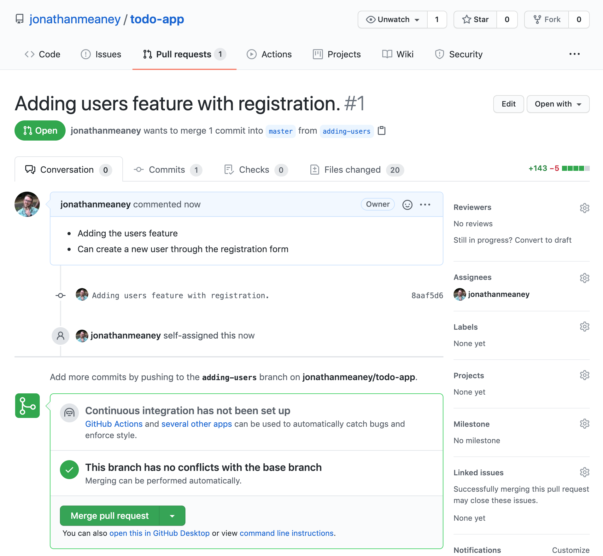
Clicking on the Files changed tab will show all the changes included in the pull request.
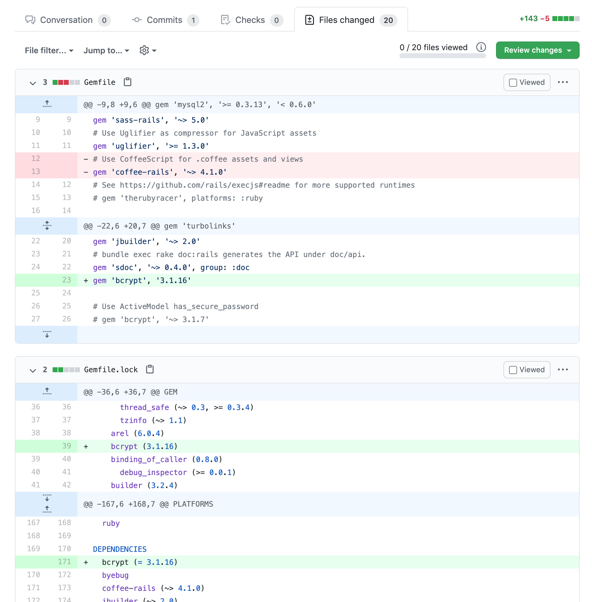
This pull request doesn't require a review from other developers so for now you can merge it so open the pull request and click on the merge button.

Now that the pull request has been merged to master we need to switch branches to master locally and pull down the latest changes.
From the root of the todo-app run git status to make sure you have no outstanding changes that need committing. If all is clear then change branches to master with:
git checkout master
You will see this output in the terminal:
Switched to branch 'master'
Your branch is behind 'origin/master' by 2 commits, and can be fast-forwarded.
(use "git pull" to update your local branch)
This means that the version of master on your machine is behind that on the remote repository and the new changes need to be pulled to keep in sync. Running git pull will pull all the new changes form the remote version of master. You will see this in the terminal, all the files that we merged from the adding-users branch are now on master:
Updating a8458c5..b510d36
Fast-forward
Gemfile | 3 +--
Gemfile.lock | 2 ++
app/assets/javascripts/users.js | 2 ++
app/assets/stylesheets/users.scss | 3 +++
app/controllers/users_controller.rb | 16 ++++++++++++++++
app/helpers/users_helper.rb | 2 ++
app/models/user.rb | 3 +++
app/views/layouts/application.html.erb | 7 +++++--
app/views/users/create.html.erb | 2 ++
app/views/users/new.html.erb | 14 ++++++++++++++
config/routes.rb | 2 +-
db/migrate/20201028134028_create_users.rb | 10 ++++++++++
db/schema.rb | 23 +++++++++++++++++++++++
spec/controllers/users_controller_spec.rb | 19 +++++++++++++++++++
spec/helpers/users_helper_spec.rb | 15 +++++++++++++++
spec/models/user_spec.rb | 5 +++++
spec/views/user/create.html.erb_spec.rb | 5 +++++
spec/views/user/new.html.erb_spec.rb | 5 +++++
spec/views/users/create.html.erb_spec.rb | 5 +++++
spec/views/users/new.html.erb_spec.rb | 5 +++++
20 files changed, 143 insertions(+), 5 deletions(-)
create mode 100644 app/assets/javascripts/users.js
create mode 100644 app/assets/stylesheets/users.scss
create mode 100644 app/controllers/users_controller.rb
create mode 100644 app/helpers/users_helper.rb
create mode 100644 app/models/user.rb
create mode 100644 app/views/users/create.html.erb
create mode 100644 app/views/users/new.html.erb
create mode 100644 db/migrate/20201028134028_create_users.rb
create mode 100644 db/schema.rb
create mode 100644 spec/controllers/users_controller_spec.rb
create mode 100644 spec/helpers/users_helper_spec.rb
create mode 100644 spec/models/user_spec.rb
create mode 100644 spec/views/user/create.html.erb_spec.rb
create mode 100644 spec/views/user/new.html.erb_spec.rb
create mode 100644 spec/views/users/create.html.erb_spec.rb
create mode 100644 spec/views/users/new.html.erb_spec.rb
Now we can create users we need a way for them to be able to login. In order to handle user authentication we will add another controller to do this. The Sessions controller. The user will be able to login and logout using this controller.
First create a new branch that all this user login work will go onto. Run git status to make sure you have no uncommitted files and then create a new branch with:
git checkout -b adding-user-login
Now we're on the new branch use the generate generator to create a new controller called Sessions with new, create and welcome actions.
bundle exec rails generate controller Sessions new create welcome
You will see the following output creating the controller and the associated views and other pieces.
create app/controllers/sessions_controller.rb
route get 'sessions/welcome'
route get 'sessions/create'
route get 'sessions/new'
invoke erb
create app/views/sessions
create app/views/sessions/new.html.erb
create app/views/sessions/create.html.erb
create app/views/sessions/welcome.html.erb
invoke rspec
create spec/controllers/sessions_controller_spec.rb
create spec/views/sessions
create spec/views/sessions/new.html.erb_spec.rb
create spec/views/sessions/create.html.erb_spec.rb
create spec/views/sessions/welcome.html.erb_spec.rb
invoke helper
create app/helpers/sessions_helper.rb
invoke rspec
create spec/helpers/sessions_helper_spec.rb
invoke assets
invoke js
create app/assets/javascripts/sessions.js
invoke scss
create app/assets/stylesheets/sessions.scss
We also need to update the routes to make sure the views for our new controller can be reached. Open config/routes.rb and replace the routes that the generator added with:
get 'login', to: 'sessions#new'
post 'login', to: 'sessions#create'
get 'welcome', to: 'sessions#welcome'
We have a get and a post for login each going to a different action. We also have a get for welcome which will be a page you see after successfully logging in.
After making the changes the config/routes.rb file will look like this, I added a few additional comments:
Rails.application.routes.draw do
# home page
root to: "site#index"
# about page
get 'about', to: 'site#about'
# users
resources :users, only: [:new, :create]
#sessions
get 'login', to: 'sessions#new'
post 'login', to: 'sessions#create'
get 'welcome', to: 'sessions#welcome'
...
...
...
Next open app/views/layouts/application.html.erb. We will add a link to the login form. Add a new link to the navigation which will use the login_path. The login_path corresponds to the get login from the routes which will route to the new action in the SessionsController.
<li class="nav-item">
<%= link_to 'Login', login_path, class: 'nav-link' %>
</li>
Refresh the browser and you will see the new link to Login.
 Clicking on the link will bring you to the
Clicking on the link will bring you to the app/views/sessions/new.html.erb page. Its a functionless page at the moment.

Open app/views/sessions/new.html.erb we need to update the page to have a form for the user to enter their login details. The form is going to be very similar to the one we created for user registration. We're using the form_tag instead of form_for here since we aren't creating a new record. With form_tag you need to specify the action yourself. We're going to submit the data to the /login endpoint. Posting to this endpoint will route to the SessionsController create action.
Since we're using form_tag we're using different input method generators email_field_tag and password_field_tag, they function a bit different to the input generators we used preciously, they need to have a value specified, we don't have a value so its default is ''.
<h1>Login</h1>
<p>Enter your details below to login!</p>
<%= form_tag '/login' do %>
<div class="form-group">
<%= label_tag :email%>
<%= email_field_tag :email, '', class: 'form-control'%>
</div>
<div class="form-group">
<%= label_tag :password%>
<%= password_field_tag :password, '', class: 'form-control'%>
</div>
<button type="submit" class="btn btn-primary btn-block">Login</button>
<% end %>
Refresh the login page and you will see the login form! 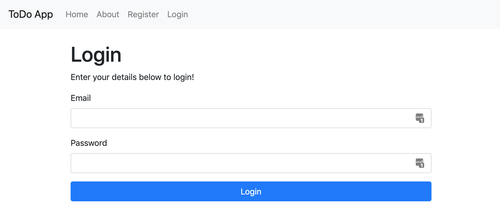
The form we created for login will submit its data to the SessionsController create action. So we need to add some code to the action to handle the login process. There are a few steps.
find_byfinder method to find a user record that matches the email submitted in the form. You can learn more about finder methods hereauthenticate method which will match the supplied password with the encrypted one.redirect_to to redirect to the welcome page.login page.Those steps are recreated below in the create action of the SessionsController so open app/controllers/sessions_controller.rb and edit the create action to look like so.
def create
# find the user record that matches the email.
@user = User.find_by(email: params[:email])
# if the user record exists and the password matches.
# Use the authenticate method provided with has_secure_password.
if @user && @user.authenticate(params[:password])
# add the user_id to the session
session[:user_id] = @user.id
# redirect to the welcome page.
redirect_to '/welcome'
else
# if the email and password do not match redirect to the login page.
redirect_to '/login'
end
end
Now attempt to login using the email and password you used to previously register. if successful you will be redirected to the welcome page. Its a boring page right now.
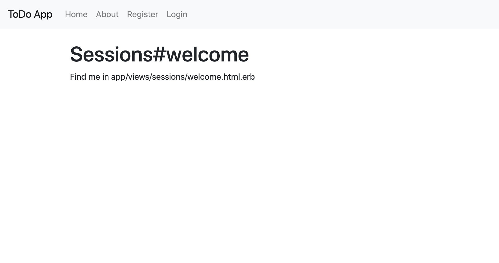
Open up app/views/sessions/welcome.html.erb and update the HTML to be a bit better. Replace the code with:
<h1>Welcome</h1>
<p>You have successfully logged in!</p>
Refresh the page and you will see a slightly better page. 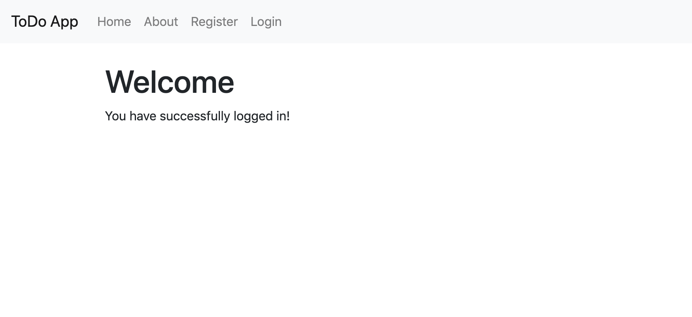
Its really handy to be able to tell if someone is logged in and not only that but who is actually logged in. So we will add a few methods to provide the functionality.
Open the app/controllers/application_controller.rb. We are going to add some helper methods that will be available in all controllers and views, since all controllers in the app naturally inherit from the ApplicationController.
We will add two methods to app/controllers/application_controller.rb, current_user which will return the user object for the logged in user and another method to check if anyone is logged in called logged_in?. Methods with ? at the end should return a boolean value. We will use the Rails helper_method method to declare these methods as helpers, which will mean they can be accessed from views as well as controllers.
Update the code in app/controllers/application_controller.rb to include the new helper methods.
class ApplicationController < ActionController::Base
# Prevent CSRF attacks by raising an exception.
# For APIs, you may want to use :null_session instead.
protect_from_forgery with: :exception
# define current_user and logged_in? as helper methods
helper_method :current_user, :logged_in?
def current_user
# Fing the user that matches the user_id stored in session.
@current_user ||= User.find_by(id: session[:user_id])
end
def logged_in?
# check if the current_user has a value. nil? returns a boolean
!current_user.nil?
end
end
The current_user method depends on the user_id that we add to the session when logging in or registering.
Lets update app/views/sessions/welcome.html.erb to use these new helper methods. Add some embedded ruby code to check if logged_in? is true and if it is then print out a message along with the email for the logged in user.
<h1>Welcome</h1>
<p>You have successfully logged in!</p>
<% if logged_in? %>
Welcome <%= current_user.email %>
<% end %>
Refresh the welcome page now and you will see the message! 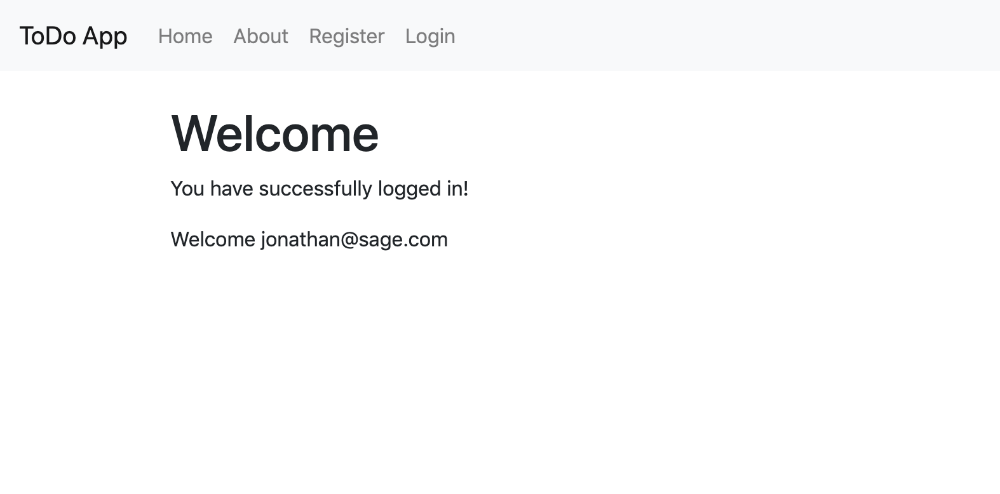
There are also a few other changes we can make using the new helper methods. Lets update the navigation menu so that the register and login links don't show when you are logged in.
Open app/views/layouts/application.html.erb and use the logged_in? helper function to only show the Register and Login menu items if logged_in? is false. The menu will look like this with the change.
<ul class="navbar-nav mr-auto">
<li class="nav-item">
<%= link_to 'Home', root_path, class: 'nav-link' %>
</li>
<li class="nav-item">
<%= link_to 'About', about_path, class: 'nav-link' %>
</li>
<% if logged_in? == false %>
<li class="nav-item">
<%= link_to 'Register', new_user_path, class: 'nav-link' %>
</li>
<li class="nav-item">
<%= link_to 'Login', login_path, class: 'nav-link' %>
</li>
<% end %>
</ul>
Now refresh the browser and you will see the links are no longer shown. 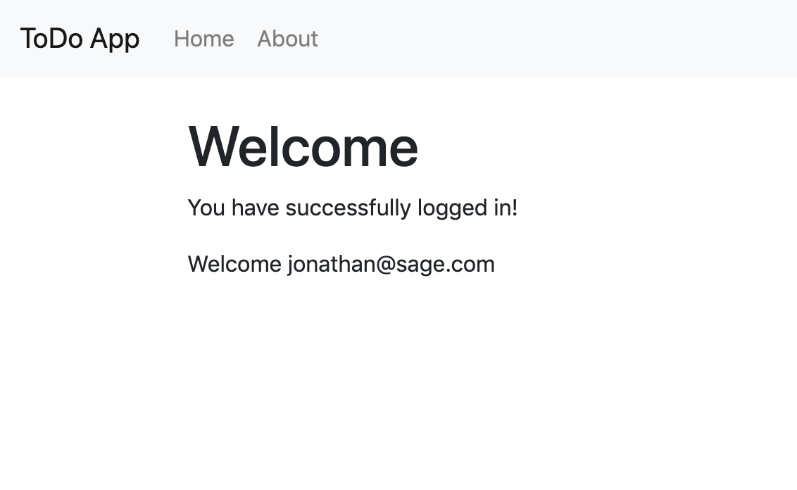
Now that we can login we need to be able to logout. First open app/controllers/sessions_controller.rb and add a new action called logout. This action will clear the user_id from the session and redirect to the login screen.
The logout action code will look like this.
def logout
session[:user_id] = nil
redirect_to '/login'
end
Now we need to update the routes to provide access to the new logout action we added. Open config/routes.rb and add a new route for logout using get.
get 'logout', to: 'sessions#logout'
Now we have the logout action and route setup lets update the navigation menu in app/views/layouts/application.html.erb and add a link to logout.
A few update to the menu and you will have something like this. I have updated to use an if else for logged_in?.
<ul class="navbar-nav mr-auto">
<li class="nav-item">
<%= link_to 'Home', root_path, class: 'nav-link' %>
</li>
<li class="nav-item">
<%= link_to 'About', about_path, class: 'nav-link' %>
</li>
<% if logged_in? %>
<li class="nav-item">
<%= link_to 'Logout', logout_path, class: 'nav-link' %>
</li>
<% else %>
<li class="nav-item">
<%= link_to 'Register', new_user_path, class: 'nav-link' %>
</li>
<li class="nav-item">
<%= link_to 'Login', login_path, class: 'nav-link' %>
</li>
<% end %>
</ul>
Now clicking on Logout will clear the session and redirect to the login page.
Like before we need to push up the changes we have made to a new branch on Github and then open a pull request to merge the changes from the new branch to master.
git status and review the list of changes. You should see a list like this.On branch adding-user-login
Changes not staged for commit:
(use "git add <file>..." to update what will be committed)
(use "git checkout -- <file>..." to discard changes in working directory)
modified: app/controllers/application_controller.rb
modified: app/views/layouts/application.html.erb
modified: config/routes.rb
Untracked files:
(use "git add <file>..." to include in what will be committed)
app/assets/javascripts/sessions.js
app/assets/stylesheets/sessions.scss
app/controllers/sessions_controller.rb
app/helpers/sessions_helper.rb
app/views/sessions/
spec/controllers/sessions_controller_spec.rb
spec/helpers/sessions_helper_spec.rb
spec/views/sessions/
git add . to add all of the changes.git commit -m 'Adding user login and logout'. You should see the following output.[adding-user-login ff79aba] Adding user login and logout
15 files changed, 150 insertions(+), 4 deletions(-)
create mode 100644 app/assets/javascripts/sessions.js
create mode 100644 app/assets/stylesheets/sessions.scss
create mode 100644 app/controllers/sessions_controller.rb
create mode 100644 app/helpers/sessions_helper.rb
create mode 100644 app/views/sessions/create.html.erb
create mode 100644 app/views/sessions/new.html.erb
create mode 100644 app/views/sessions/welcome.html.erb
create mode 100644 spec/controllers/sessions_controller_spec.rb
create mode 100644 spec/helpers/sessions_helper_spec.rb
create mode 100644 spec/views/sessions/create.html.erb_spec.rb
create mode 100644 spec/views/sessions/new.html.erb_spec.rb
create mode 100644 spec/views/sessions/welcome.html.erb_spec.rb
git push -u origin adding-user-login. You will see this output including output for creating the new remote branch.Enumerating objects: 48, done.
Counting objects: 100% (48/48), done.
Delta compression using up to 8 threads
Compressing objects: 100% (29/29), done.
Writing objects: 100% (31/31), 4.14 KiB | 470.00 KiB/s, done.
Total 31 (delta 8), reused 0 (delta 0)
remote: Resolving deltas: 100% (8/8), completed with 6 local objects.
remote:
remote: Create a pull request for 'adding-user-login' on GitHub by visiting:
remote: https://github.com/jonathanmeaney/todo-app/pull/new/adding-user-login
remote:
To github.com:jonathanmeaney/todo-app.git
* [new branch] adding-user-login -> adding-user-login
Branch 'adding-user-login' set up to track remote branch 'adding-user-login' from 'origin'.
Compare & pull request button.
 .
.Compare & pull request button you can add a title and description to the pull request and assign it to yourself. It should automatically configure the branches for you merging but still make sure the branch on the left is master and the one on the right is adding-user-login.
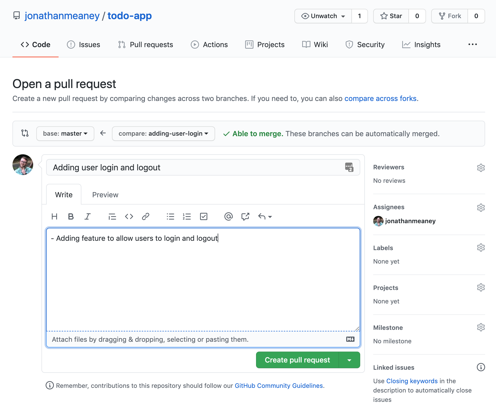Create pull request and you will have created the new pull request.
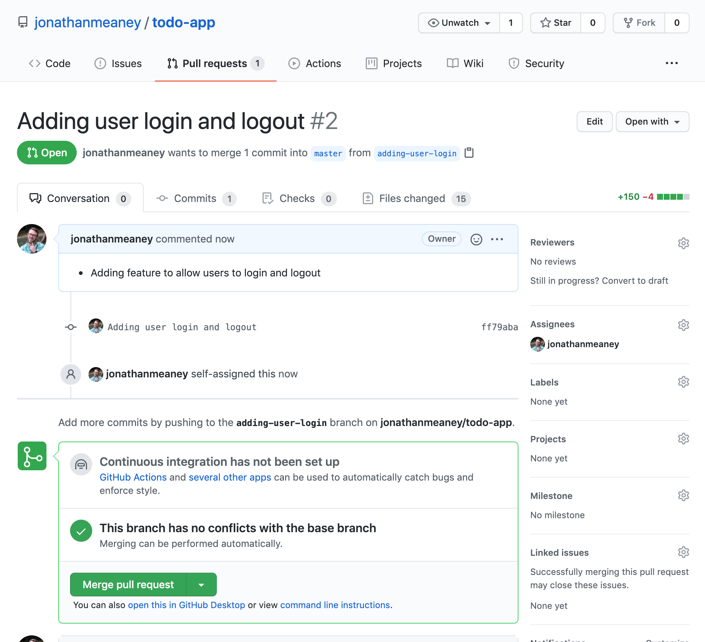Merge pull request and then Confirm merge. The pull request has been merged into master.todo-app directory run git status to make sure there are no changed files needed to be committed and then change branches back to master with git checkout master.git pull to pull the latest changes (the user login/logout feature). Your local master is now up to date with the remote repository.We can create a new user, login and logout so now its time to create the actual ToDos functionality.
First, as in the previous sections lets create a new branch to hold the ToDos work. Call the branch adding-todos. Make sure there are no changes that need to be committed or stashed by running git status then running the following command will create the branch and check it out.
git checkout -b adding-todos
We're going to use a new Rails generator method called scaffold. This generator creates a controller, views, model and database migration all in one go. The scaffold method needs a name (usually singular, Rails will pluralize) which will be ToDo followed by a list of model attribute and data type pairs.
The ToDo has the following attributes; a title, a description, a boolean flag for completion and a reference to the user that created it. The non user fields are typical data types string and boolean but the user is a reference. This will generate a user_id column in the to_dos table. This column will be used to join the ToDo record with a User record.
bundle exec rails generate scaffold ToDo title:string description:string completed:boolean user:references
Running the above command will generate the following output. You can see the migration, model, controller, views, tests and all the other pieces being generated in one go.
invoke active_record
create db/migrate/20201030184852_create_to_dos.rb
create app/models/to_do.rb
invoke rspec
create spec/models/to_do_spec.rb
invoke resource_route
route resources :to_dos
invoke scaffold_controller
create app/controllers/to_dos_controller.rb
invoke erb
create app/views/to_dos
create app/views/to_dos/index.html.erb
create app/views/to_dos/edit.html.erb
create app/views/to_dos/show.html.erb
create app/views/to_dos/new.html.erb
create app/views/to_dos/_form.html.erb
invoke rspec
create spec/controllers/to_dos_controller_spec.rb
create spec/views/to_dos/edit.html.erb_spec.rb
create spec/views/to_dos/index.html.erb_spec.rb
create spec/views/to_dos/new.html.erb_spec.rb
create spec/views/to_dos/show.html.erb_spec.rb
create spec/routing/to_dos_routing_spec.rb
invoke rspec
create spec/requests/to_dos_spec.rb
invoke helper
create app/helpers/to_dos_helper.rb
invoke rspec
create spec/helpers/to_dos_helper_spec.rb
invoke jbuilder
create app/views/to_dos/index.json.jbuilder
create app/views/to_dos/show.json.jbuilder
create app/views/to_dos/_to_do.json.jbuilder
invoke assets
invoke js
create app/assets/javascripts/to_dos.js
invoke scss
create app/assets/stylesheets/to_dos.scss
invoke scss
create app/assets/stylesheets/scaffolds.scss
Using the scaffold generator will create a controller that has typical CRUD (Create read update destroy) actions pre defined for the resource you are creating. The accompanying views will also support these pre defined actions. If you open app/controllers/to_dos_controller.rb you will see the different actions. The different CRUD actions are explained below.
| Action | Description |
|---|---|
| index | The index action is typically used to list all of the records of the resource type. The resource is `ToDo` in this case so all ToDos would be listed on this page. |
| show | The show action is used to show the details of a particular record. |
| new | The new action is used to house a form for creating a new record. |
| edit | The edit action is used to house a form for editing an existing record. |
| create | The create action is called from the form on the new page and is responsible for actually creating the new record. |
| update | The update action is called from the form on the edit page and is responsible for actually updating the existing record. |
| destroy | The destroy action is used to destroy a record. |
### 9.3 Updating User associations The ToDo scaffold has been created but we still need to create the table in the database so we need to use rake to run the migrations. Run the following command:
bundle exec rake db:migrate
You will get the output saying the new table has been created:
== 20201030184852 CreateToDos: migrating ======================================
-- create_table(:to_dos)
-> 0.2132s
== 20201030184852 CreateToDos: migrated (0.2133s) =============================
The to_dos table is in place and had a column which will be used to join to the users table. We need to define the relationship between these two tables in Rails.
If you open the ToDo model in app/models/to_do.rb you'll see that part of the relationship has already been created by the scaffold method. Because when we created the scaffold we specified user:references Rails knows that there needs to be a relationship between ToDo and User and references in this case means belongs_to. A ToDo belongs to a User. We need to add the other side of the relationship on the User model in app/models/user.rb.
Open app/models/user.rb and complete the relationship. The relationship between the User and the ToDo is a one to many relationship. A User can have many ToDo records, and a ToDo belongs to a User. Use the rails has_many association to finish the relationship. The final code in app/models/user.rb will look like this:
class User < ActiveRecord::Base
has_secure_password
has_many :to_dos
end
Now the relationship between the two models is in place.
If you open the app/controllers/to_dos_controller.rb we will make a few changes to include the current_user (logged in user) that we added previously.
Currently the index action will get all ToDo records to display. We should only get the records that belong to the user currently logged in. To do this we will update the index action and change ToDo.all. Instead of ToDo.all we will access the current_user method and call to_dos on it. This is accessing the relationship we just setup on the User model. Calling the to_dos relationship on the current_user object will retrieve all of the ToDo records associated with the logged in user by using the ToDo user_id column to join the two tables. the updated index action will look like this:
def index
@to_dos = current_user.to_dos
end
Next we're going to update the to_do_params method and remove user_id from it. We don't want user_id being submitted in the form to create a ToDo. The user_id field for the new ToDo record will be populated with the id from current_user. The updated method will look like this.
def to_do_params
params.require(:to_do).permit(:title, :description, :completed)
end
Next update the create action to set the user for the new ToDo record. To do that you can call @to_do.user = current_user in the method. The updated method will look like this:
def create
@to_do = ToDo.new(to_do_params)
@to_do.user = current_user
respond_to do |format|
if @to_do.save
format.html { redirect_to @to_do, notice: 'To do was successfully created.' }
format.json { render :show, status: :created, location: @to_do }
else
format.html { render :new }
format.json { render json: @to_do.errors, status: :unprocessable_entity }
end
end
end
First we need to remove some SCSS that got added when running the scaffold generator. Delete the file app/assets/stylesheets/scaffold.scss. This will cause some conflicts with Bootstrap.
We need a link to get to the ToDo records. If you open config/routes.rb you will see that the scaffold generator also added resources :to_dos to the routes file. The resources method will auto generate routes for each of the actions in app/controllers/to_dos_controller.rb. If you run bundle exec rake routes you will see all the new routes available.
Prefix Verb URI Pattern Controller#Action
to_dos GET /to_dos(.:format) to_dos#index
POST /to_dos(.:format) to_dos#create
new_to_do GET /to_dos/new(.:format) to_dos#new
edit_to_do GET /to_dos/:id/edit(.:format) to_dos#edit
to_do GET /to_dos/:id(.:format) to_dos#show
PATCH /to_dos/:id(.:format) to_dos#update
PUT /to_dos/:id(.:format) to_dos#update
DELETE /to_dos/:id(.:format) to_dos#destroy
root GET / site#index
about GET /about(.:format) site#about
users POST /users(.:format) users#create
new_user GET /users/new(.:format) users#new
login GET /login(.:format) sessions#new
POST /login(.:format) sessions#create
welcome GET /welcome(.:format) sessions#welcome
logout GET /logout(.:format) sessions#logout
Open app/views/layouts/application.html.erb. We are going to add a link to the the to_dos controller index and it should only be available if you are logged in. Add a new link inside the logged_in? block. The link with go to the to_dos_path which will route to the index of the to_dos_controller.
<li class="nav-item">
<%= link_to 'ToDos', to_dos_path, class: 'nav-link' %>
</li>
The full navigation menu now looks like this:
<ul class="navbar-nav mr-auto">
<li class="nav-item">
<%= link_to 'Home', root_path, class: 'nav-link' %>
</li>
<li class="nav-item">
<%= link_to 'About', about_path, class: 'nav-link' %>
</li>
<% if logged_in? %>
<li class="nav-item">
<%= link_to 'ToDos', to_dos_path, class: 'nav-link' %>
</li>
<li class="nav-item">
<%= link_to 'Logout', logout_path, class: 'nav-link' %>
</li>
<% else %>
<li class="nav-item">
<%= link_to 'Register', new_user_path, class: 'nav-link' %>
</li>
<li class="nav-item">
<%= link_to 'Login', login_path, class: 'nav-link' %>
</li>
<% end %>
</ul>
Now if you refresh the page you will see the ToDos link in the navigation bar. If you click on the link it will bring you to app/views/to_dos/index.html.erb which lists the ToDo records belonging to the logged in user.
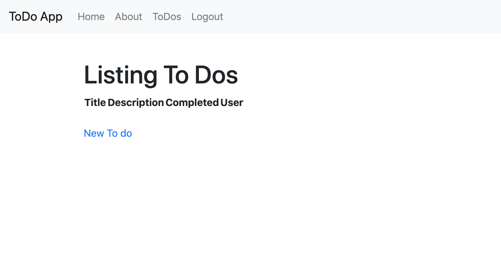
At the moment there are no ToDo records to display and if you click on the New To Do link it will bring you to the form for creating a new ToDo. You'll notice that the New To Do link was added by the scaffold generator. The generator adds links to connect up the pages created.
 We need to make a few updates to make the pages look better and integrate with
We need to make a few updates to make the pages look better and integrate with Bootstrap.
First open app/views/to_dos/index.html.erb and replace its contents with
<p id="notice"><%= notice %></p>
<h1>Listing To Dos</h1>
<table class="table">
<thead>
<tr>
<th>Title</th>
<th>Description</th>
<th>Completed</th>
<th>User</th>
<th colspan="3"></th>
</tr>
</thead>
<tbody>
<% @to_dos.each do |to_do| %>
<tr>
<td><%= to_do.title %></td>
<td><%= to_do.description %></td>
<td><%= to_do.completed %></td>
<td><%= link_to 'Show', to_do %></td>
<td><%= link_to 'Edit', edit_to_do_path(to_do) %></td>
<td><%= link_to 'Destroy', to_do, method: :delete, data: { confirm: 'Are you sure?' } %></td>
</tr>
<% end %>
</tbody>
</table>
<br>
<%= link_to 'New To do', new_to_do_path, class: 'btn btn-primary' %>
There are just a few small changes adding in some Bootstrap classes to the table and new link to make it look like a button.
Now open app/views/to_dos/_form_.html.erb. This if the form that will appear on the new and edit pages. Replace the _form.html.erb content with the following:
<%= form_for(@to_do) do |f| %>
<% if @to_do.errors.any? %>
<div id="error_explanation">
<h2><%= pluralize(@to_do.errors.count, "error") %> prohibited this to_do from being saved:</h2>
<ul>
<% @to_do.errors.full_messages.each do |message| %>
<li><%= message %></li>
<% end %>
</ul>
</div>
<% end %>
<div>
<%= f.label :title %>
<%= f.text_field :title, class: 'form-control' %>
</div>
<div>
<%= f.label :description %>
<%= f.text_field :description, class: 'form-control' %>
</div>
<div class="actions">
<%= f.submit class: 'btn btn-primary btn-block' %>
</div>
<% end %>
The changes are adding some Bootstrap classes to the fields and submit and removing some fields that shouldn't be in the form like user_id and completed. If you view the new ToDo page now it will look like this.

Now open app/views/to_dos/show.html.erb and replace it with the following:
<p id="notice"><%= notice %></p>
<p>
<strong>Title:</strong>
<%= @to_do.title %>
</p>
<p>
<strong>Description:</strong>
<%= @to_do.description %>
</p>
<p>
<strong>Completed:</strong>
<%= @to_do.completed %>
</p>
<%= link_to 'Edit', edit_to_do_path(@to_do) %> |
<%= link_to 'Back', to_dos_path %>
The change is small, just removing the user section. This doesn't need to be shown on each ToDo.
Now if you reload the index page for ToDos you will see the list of ToDo records you have created.
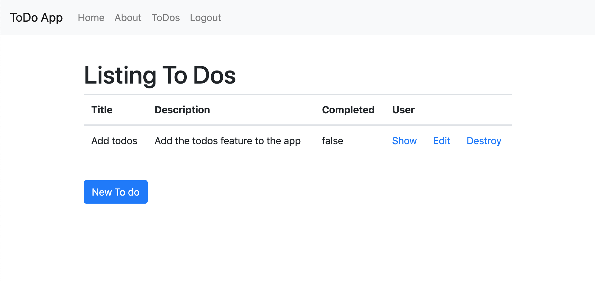
If you click on the Show link for a record you will see the show page.
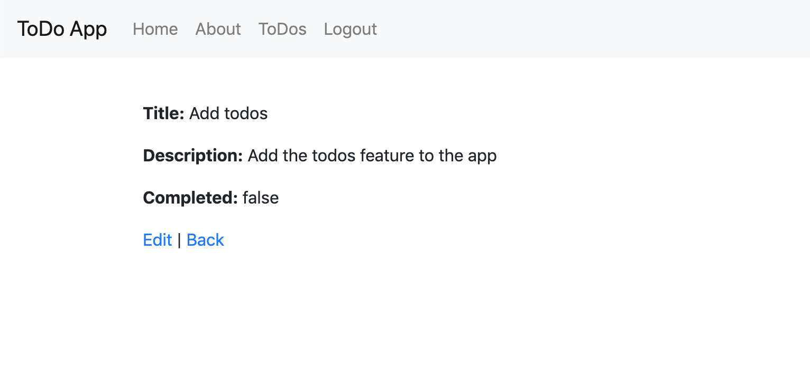
Lets add an additional security feature to app/controllers/to_dos_controller.rb. We can add an additional check to make sure someone is logged in before accessing any of the actions.
Open app/controllers/to_dos_controller.rb and add a new private method called authorized. This method will redirect_to the login page if no one is logged in.
def authorized
redirect_to '/login' unless logged_in?
end
To call this method we're going to register is as a before_filter. A before filter method will be called before accessing any of the controller actions. So before any of the actions in the to_dos_controller are called a check if made to make sure someone is logged in, and if they aren't they will be redirected to login. Register the method as a before filter using this code: before_action :authorized. The ToDosController code looks like this after making the change adding the before_filter.
class ToDosController < ApplicationController
before_action :authorized
before_action :set_to_do, only: [:show, :edit, :update, :destroy]
# GET /to_dos
# GET /to_dos.json
def index
@to_dos = current_user.to_dos
end
# GET /to_dos/1
# GET /to_dos/1.json
def show
end
# GET /to_dos/new
def new
@to_do = ToDo.new
end
# GET /to_dos/1/edit
def edit
end
# POST /to_dos
# POST /to_dos.json
def create
@to_do = ToDo.new(to_do_params)
@to_do.user = current_user
respond_to do |format|
if @to_do.save
format.html { redirect_to @to_do, notice: 'To do was successfully created.' }
format.json { render :show, status: :created, location: @to_do }
else
format.html { render :new }
format.json { render json: @to_do.errors, status: :unprocessable_entity }
end
end
end
# PATCH/PUT /to_dos/1
# PATCH/PUT /to_dos/1.json
def update
respond_to do |format|
if @to_do.update(to_do_params)
format.html { redirect_to @to_do, notice: 'To do was successfully updated.' }
format.json { render :show, status: :ok, location: @to_do }
else
format.html { render :edit }
format.json { render json: @to_do.errors, status: :unprocessable_entity }
end
end
end
# DELETE /to_dos/1
# DELETE /to_dos/1.json
def destroy
@to_do.destroy
respond_to do |format|
format.html { redirect_to to_dos_url, notice: 'To do was successfully destroyed.' }
format.json { head :no_content }
end
end
private
# Use callbacks to share common setup or constraints between actions.
def set_to_do
@to_do = ToDo.find(params[:id])
end
# Never trust parameters from the scary internet, only allow the white list through.
def to_do_params
params.require(:to_do).permit(:title, :description, :completed)
end
def authorized
redirect_to '/login' unless logged_in?
end
end
As in the previous sections.
git statusgit add .git commit -m 'Adding ToDo functionality'git push -u origin adding-todosadding-todos branch into mastertodo-app checkout master with git checkout mastergit pull